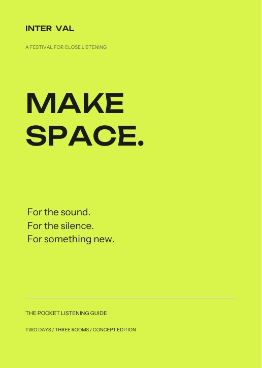
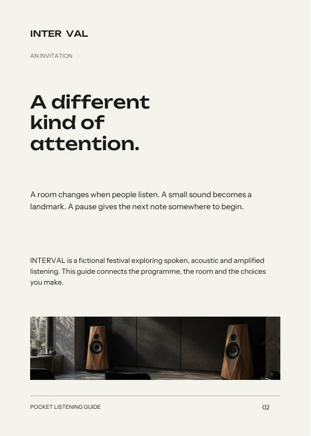
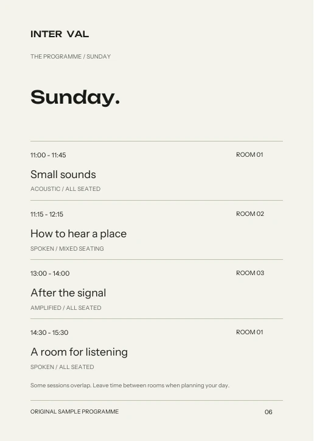
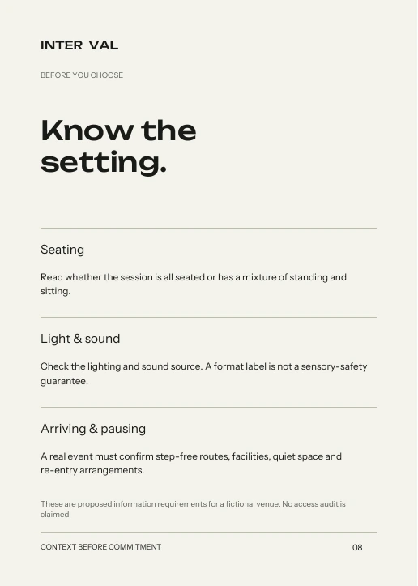
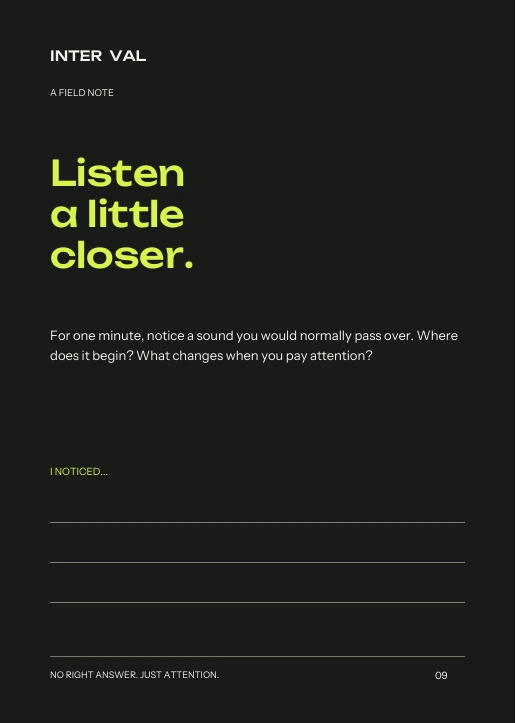
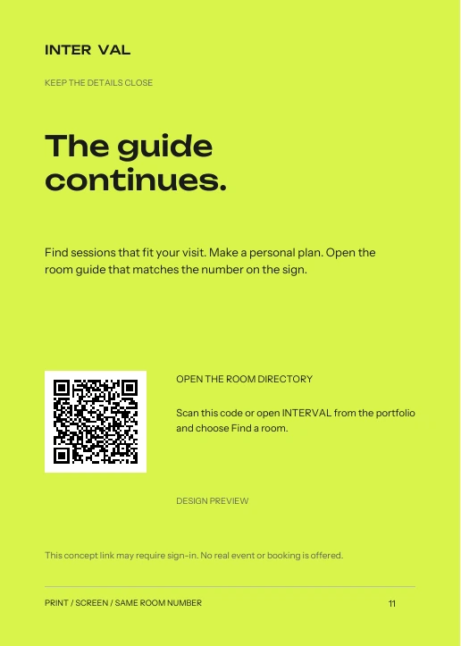
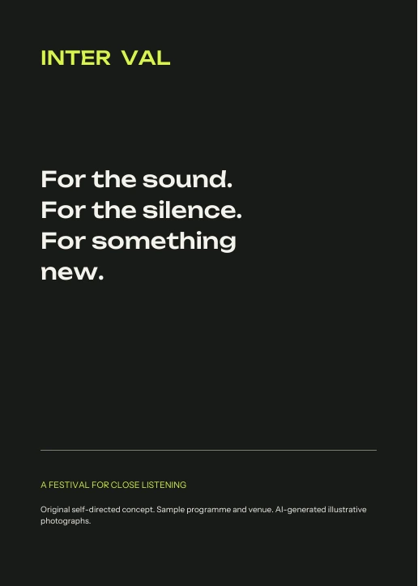

Something
to keep close.
A programme, a room key, a place to pause. The pocket guide carries the same hierarchy and room numbers as the digital experience.
Download the 12-page PDF ↓Read the text edition ↓Cover / 12 pages











A guide made
for moving around.
Format: A5, 148 × 210 mm. Twelve pages, planned for saddle stitching. It opens flat enough to read a schedule without juggling a large map fold.
Grid: 12 mm text margins, aligned time and room fields, a consistent footer, and deliberately different opening, programme, image, information and writing pages.
Production: The PDF includes trim and 3 mm bleed boxes, embedded typefaces and reader-order pages. A proposed uncoated stock supports writing. Printer imposition, colour proofing and a physical dummy remain production steps.
Accessible alternative: the text edition below and the working digital programme carry the information without relying on page images. The PDF has not been certified as a tagged accessible PDF.
The guide, in words.
Read the programme and visitor guide
An invitation
INTERVAL is a fictional festival exploring spoken, acoustic and amplified listening. A room changes when people listen. A small sound becomes a landmark. A pause gives the next note somewhere to begin.
Three ways to listen
- Spoken: conversation, guided attention and ideas.
- Acoustic: sounds made by physical materials and instruments.
- Amplified: recorded or electronic sound through speakers. Read each session’s conditions.
Saturday
- 11:00–11:45 · Deep listening
- Room 01 · Spoken · All seated
- 11:20–12:10 · Objects in motion
- Room 02 · Acoustic · All seated
- 12:30–13:20 · Tape as landscape
- Room 03 · Amplified · All seated
- 14:00–14:50 · Between the notes
- Room 02 · Acoustic · All seated · Full sample state
Sunday
- 11:00–11:45 · Small sounds
- Room 01 · Acoustic · All seated
- 11:15–12:15 · How to hear a place
- Room 02 · Spoken · Mixed seating
- 13:00–14:00 · After the signal
- Room 03 · Amplified · All seated
- 14:30–15:30 · A room for listening
- Room 01 · Spoken · All seated
Room key
From the fictional welcome desk: Room 01, Listening room, left. Room 02, Studio, ahead. Room 03, Black box, right. This is a conceptual directory, not a measured or verified access route.
Before choosing
Check seating, lighting and sound. A real venue must confirm entrances, facilities, step-free routes, quiet space and re-entry arrangements. These remain open requirements.
A listening note
For one minute, notice a sound you would normally pass over. Where does it begin? What changes when you pay attention? Write what you noticed; there is no right answer.
A personal plan
Choose your sessions, note their times and room numbers, and compare the end of one with the start of the next. Leave room for a break. A personal plan is not a reservation.